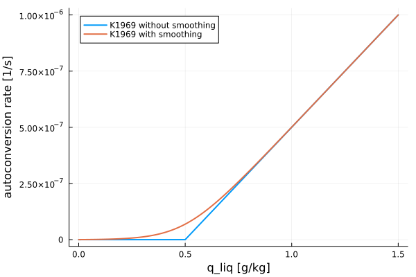
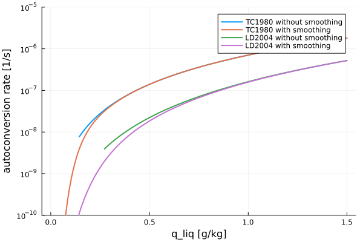
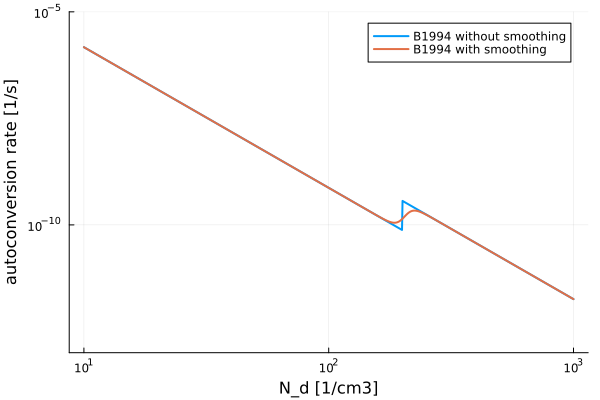

Smooth transition at thresholds
To avoid abrupt change of values at thresholds we can use the logistic function to make the transition smooth. The logistic function is defined as
\[f(t, k) = \frac{1}{1+e^{-kt}}\]
where
- $t$ is the independent parameter,
- and $k$ is the growth rate of the curve characterizing the steepness of the transition.
The value of the logistic function changes from zero at $t \rightarrow -\infty$ to one at $t \rightarrow \infty$ with the majority of the change happening around $t = 0$. In our microphysics applications, the independent parameter (typically specific humidities) takes only non-negative values, and when this parameter is zero the function should return zero. Thus, we use the change of variable $t = x/x_0 - x_0/x$, where $x_0$ is the threshold value of $x$. Therefore, the logistic function for smooth transitioning from $f(x) = 0$, for $x < x_0$, to $f(x)=1$, for $x > x_0$, is defined as
\[f(x, x_0, k) = \frac{1}{1+e^{-k(x/x_0 - x_0/x)}}\]
Note that when both $x$ and $x_0$ are zero the value given by the above equation is undefined. In this case we return a zero value instead.
Smooth transition of derivative at thresholds
When the function itself is continuous but its derivative changes abruptly at a threshold we can use the indefinite integral of the logistic function for smooth transitioning. In this case, the following function can be used
\[f(x, x_0, k) = \frac{x_0}{k} \ln\left(1+e^{k(x/x_0 - 1 + a_{trnslt})} \right) - a_{trnslt} x_0\]
where $a$ is a fixed value that is defined to enforce zero at $x=0$:
\[a_{trnslt} = -\frac{1}{k}\ln\left(1 - e^{-k}\right)\]
The curve defined by the above equation smoothly transition from $f(x) = 0$, for $x < x_0$, to $f(x)=x-x_0$, for $x > x_0$. Note that when both $x$ and $x_0$ are zero the value of the function is undefined. In this case we return a zero value instead.
Example figures
import Plots
import CloudMicrophysics
import CLIMAParameters
const PL = Plots
const CM1 = CloudMicrophysics.Microphysics1M
const CM2 = CloudMicrophysics.Microphysics2M
const CP = CLIMAParameters
const CMP = CloudMicrophysics.Parameters
FT = Float64
rain = []
B1994 = []
TC1980 = []
LD2004 = []
k_thrshld_stpnss_values = [5.0, 2.0, 12.0]
for i in 1:3
override_file = joinpath("override_dict.toml")
open(override_file, "w") do io
println(io, "[threshold_smooth_transition_steepness]")
println(io, "alias = \"k_thrshld_stpnss\"")
println(io, "value = " * string(k_thrshld_stpnss_values[i]))
println(io, "type = \"float\"")
end
toml_dict = CP.create_toml_dict(FT; override_file, dict_type="alias")
isfile(override_file) && rm(override_file; force=true)
push!(rain, CMP.Rain(FT, toml_dict))
push!(B1994, CMP.B1994(FT, toml_dict))
push!(TC1980, CMP.TC1980(FT, toml_dict))
push!(LD2004, CMP.LD2004(FT, toml_dict))
end
# example values
q_liq_range = range(1e-8, stop=1.5e-3, length=1000)
N_d_range = range(1e7, stop=1e9, length=1000)
ρ_air = 1.0 # kg m^-3
q_liq_K1969 = [CM1.conv_q_liq_to_q_rai(rain[1].acnv1M, q_liq) for q_liq in q_liq_range]
q_liq_K1969_s = [CM1.conv_q_liq_to_q_rai(rain[1].acnv1M, q_liq, smooth_transition = true) for q_liq in q_liq_range]
q_liq_TC1980 = [CM2.conv_q_liq_to_q_rai(TC1980[2], q_liq, ρ_air) for q_liq in q_liq_range]
q_liq_TC1980_s = [CM2.conv_q_liq_to_q_rai(TC1980[2], q_liq, ρ_air, smooth_transition = true) for q_liq in q_liq_range]
q_liq_LD2004 = [CM2.conv_q_liq_to_q_rai(LD2004[2], q_liq, ρ_air) for q_liq in q_liq_range]
q_liq_LD2004_s = [CM2.conv_q_liq_to_q_rai(LD2004[2], q_liq, ρ_air, smooth_transition = true) for q_liq in q_liq_range]
N_d_B1994 = [CM2.conv_q_liq_to_q_rai(B1994[3], 5e-4, ρ_air, N_d = N_d) for N_d in N_d_range]
N_d_B1994_s = [CM2.conv_q_liq_to_q_rai(B1994[3], 5e-4, ρ_air, N_d = N_d, smooth_transition = true) for N_d in N_d_range]
PL.plot(q_liq_range * 1e3, q_liq_K1969,
linewidth=2,
xlabel="q_liq [g/kg]",
ylabel="autoconversion rate [1/s]",
label="K1969 without smoothing"
)
PL.plot!(q_liq_range * 1e3, q_liq_K1969_s, linewidth=2, label="K1969 with smoothing")
PL.plot(q_liq_range * 1e3, q_liq_TC1980,
linewidth=2,
xlabel="q_liq [g/kg]",
ylabel="autoconversion rate [1/s]",
label="TC1980 without smoothing",
yaxis=:log,
ylim=(1e-10, 1e-5)
)
PL.plot!(q_liq_range * 1e3, q_liq_TC1980_s, linewidth=2, label="TC1980 with smoothing")
PL.plot!(q_liq_range * 1e3, q_liq_LD2004, linewidth=2, label="LD2004 without smoothing")
PL.plot!(q_liq_range * 1e3, q_liq_LD2004_s, linewidth=2, label="LD2004 with smoothing")
PL.plot(N_d_range * 1e-6, N_d_B1994,
linewidth=2,
xlabel="N_d [1/cm3]",
ylabel="autoconversion rate [1/s]",
label="B1994 without smoothing",
xaxis=:log,
yaxis=:log,
ylim=(1e-13, 1e-5)
)
PL.plot!(N_d_range * 1e-6, N_d_B1994_s, linewidth=2, label="B1994 with smoothing")"/home/runner/work/CloudMicrophysics.jl/CloudMicrophysics.jl/docs/build/N_d_B1994.svg"  